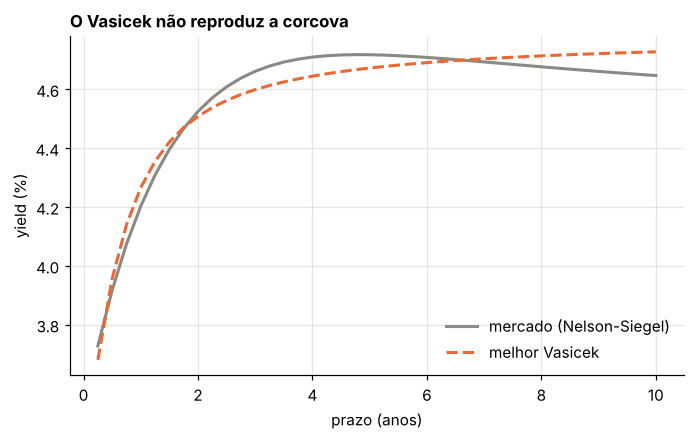
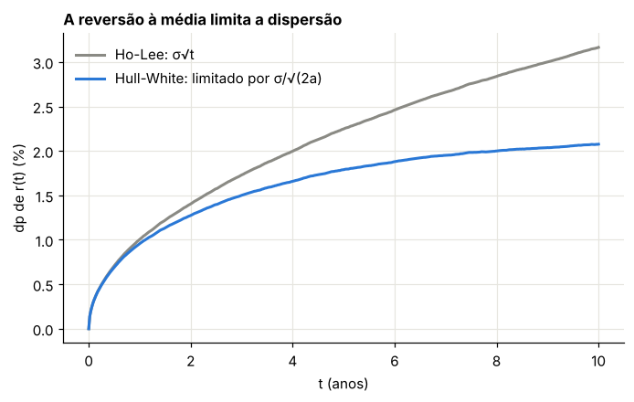
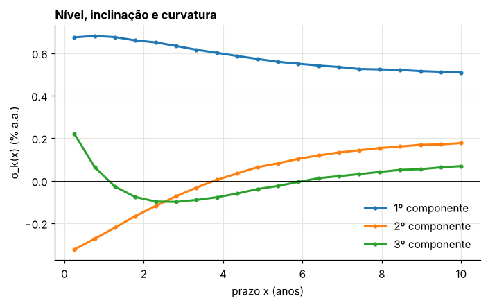
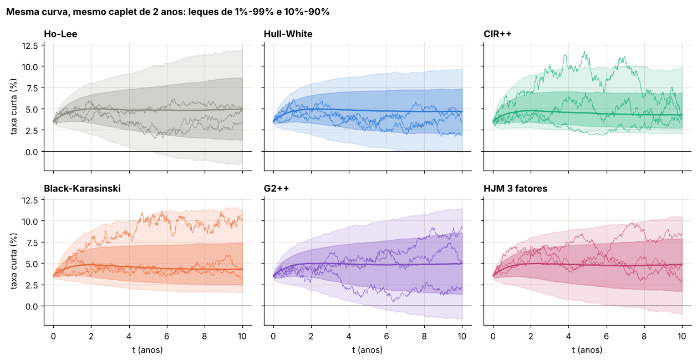

Módulo 19 — Simulação de trajetórias de juros: do Vasicek ao HJM#
Curso: Derivativos com Python. Terceiro módulo do complemento de juros, depois dos Módulos 17 e 18. Material de base: Wilmott, Paul Wilmott Introduces Quantitative Finance (Aulas 4, 5 e 8 do seu curso); Brigo e Mercurio, Interest Rate Models — Theory and Practice, caps. 3 e 4; Heath, Jarrow e Morton (1992); Black e Karasinski (1991).
O que você vai conseguir fazer ao final#
Dizer o que significa “calibrar trajetórias”: a curva de hoje, uma volatilidade de referência e a medida certa.
Simular seis modelos em ordem de complexidade: Vasicek, Ho-Lee, Hull-White, CIR++, Black-Karasinski, G2++ e HJM multifatorial.
Calibrar o drift nas próprias trajetórias, passo a passo, para qualquer modelo, inclusive os sem fórmula fechada.
Deduzir a condição de drift do HJM e estimar suas volatilidades por componentes principais.
Comparar os modelos calibrados ao mesmo mercado naquilo que a calibração não fixa: sorriso, prazos longos, juros negativos e correlação entre prazos.
Onde estamos#
Os Módulos 17 e 18 trataram de um modelo, o Hull-White, por fórmulas e por árvore. Árvores são ótimas para um ou dois fatores e para exercício antecipado (os diagramas de árvores trinomiais, padrão e implícitas, de Derman, Kani e Chriss, 1996, ilustram bem a ideia de espaço de estados). Mas, com dois fatores ou mais, com dependência de trajetória, ou quando o modelo é a curva inteira (HJM), o caminho é a simulação. Este módulo constrói, sobre a mesma curva sintética, uma escada de modelos e calibra todos ao mesmo mercado.
0. Preparação#
import time
import numpy as np
import pandas as pd
import matplotlib.pyplot as plt
from scipy.optimize import brentq, least_squares
from IPython.display import display
AZUL, LARANJA, VERDE, CINZA = "#2a78d6", "#eb6834", "#1baf7a", "#8a8a84"
CORES = {"Ho-Lee": CINZA, "Hull-White": AZUL, "CIR++": VERDE, "Black-Karasinski": LARANJA, "G2++": "#7b4bc4", "HJM 3 fatores": "#c43b6b"}
plt.rcParams.update({
"figure.figsize": (7.2, 4.0), "figure.dpi": 110,
"axes.spines.top": False, "axes.spines.right": False,
"axes.grid": True, "grid.color": "#e6e5df", "grid.linewidth": 0.8,
"axes.axisbelow": True, "axes.titlesize": 11, "axes.titleweight": "bold",
"axes.titlelocation": "left", "lines.linewidth": 2.0, "legend.frameon": False,
"font.size": 10,
})
def f3(x):
"""Formata com três casas decimais no padrão brasileiro."""
return f"{x:,.3f}".replace(",", "§").replace(".", ",").replace("§", ".")
def tabela(df):
"""Exibe um DataFrame com os números reais em três casas decimais."""
def fmt(v):
if isinstance(v, (float, np.floating)):
return "n/d" if np.isnan(v) else f3(v)
return v
display(df.map(fmt))
_checks = {"n": 0}
def ok(condicao, mensagem):
"""Verificação do laboratório: interrompe o notebook se a conta não fechar."""
assert bool(condicao), f"FALHOU: {mensagem}"
_checks["n"] += 1
print(f"OK — {mensagem}")
# curva sintética Nelson-Siegel dos Módulos 17 e 18
def f_merc(t, b0=0.045, b1=-0.010, b2=0.020, tau=1.5):
t = np.asarray(t, float); e = np.exp(-t / tau)
return b0 + b1 * e + b2 * (t / tau) * e
def P_merc(T, b0=0.045, b1=-0.010, b2=0.020, tau=1.5):
T = np.asarray(T, float); e = np.exp(-T / tau)
return np.exp(-(b0 * T + b1 * tau * (1 - e) + b2 * tau * (1 - (1 + T / tau) * e)))
# grade comum: passo semanal até 10 anos
DT = 1 / 52
N10 = 520
TEMPOS = np.arange(N10 + 1) * DT
I_PATHS = 20_000
def desconto(r):
"""exp(−∫r) em cada data da grade, regra do trapézio. r tem forma (passos+1, trajetórias)."""
integ = np.cumsum((r[1:] + r[:-1]) / 2 * DT, axis=0)
return np.vstack([np.ones((1, r.shape[1])), np.exp(-integ)])
def teste_curva(r, prazos=(1, 2, 5, 10)):
"""Erro de E[exp(−∫r)] contra P(0,T), em pb, e o erro-padrão."""
D = desconto(r)
linhas = []
for T in prazos:
k = int(round(T / DT))
if k < D.shape[0]:
d = D[k]
linhas.append((T, 1e4 * (d.mean() - P_merc(T)), 1e4 * d.std() / np.sqrt(len(d))))
return pd.DataFrame(linhas, columns=["prazo", "erro (pb)", "erro-padrão (pb)"])
def ou_exato(a, s, Z):
"""Ornstein-Uhlenbeck dx = −a x dt + s dW, x0 = 0, transição exata."""
e1 = np.exp(-a * DT); sd = s * np.sqrt((1 - e1**2) / (2 * a))
x = np.zeros((Z.shape[0] + 1, Z.shape[1]))
for k in range(Z.shape[0]):
x[k + 1] = x[k] * e1 + sd * Z[k]
return x
print("Ambiente pronto.")
Ambiente pronto.
1. O que é “calibrar trajetórias”#
Uma simulação de juros para precificação precisa acertar três coisas.
1. A medida. Para preços, as trajetórias são simuladas sob a medida neutra ao risco \(Q\), com a conta remunerada como numerário (Módulo 17, Seção 2). Para risco (VaR, estresse, ALM), simula-se sob a medida real \(P\), que difere de \(Q\) pelo preço de mercado do risco \(\lambda\). Este módulo trabalha sob \(Q\).
2. A curva de hoje. Para todo prazo \(T\),
É o teste da martingal do Módulo 15 aplicado ao zero-cupom: o título descontado deve ter média igual ao seu preço de hoje. Um modelo que não passa nesse teste dá preços errados até para títulos sem opção.
3. Uma volatilidade. A curva fixa o drift; a dispersão das trajetórias tem de vir de preços de opções. Como “mercado” de volatilidade usamos um único instrumento: o caplet no dinheiro de 2 anos com prazo de 3 meses, com taxa composta no período (in arrears, no estilo do SOFR e do CDI, que capitalizam a taxa diária). Ele paga em \(t = 2{,}25\)
e tem a vantagem de depender só da trajetória de \(r\), de modo que qualquer modelo o precifica com as mesmas linhas de código. O preço de “mercado” é o do Hull-White de referência (\(a = 0{,}1\), \(\sigma = 1\%\)), calculado com 100 mil trajetórias.
1.1 A escada de modelos#
Modelo |
Taxa curta |
Como ajusta a curva |
Taxa negativa |
Fatores |
|---|---|---|---|---|
Vasicek |
\(dr = a(b - r)dt + \sigma dW\) |
não ajusta (3 parâmetros) |
sim |
1 |
Ho-Lee |
\(dr = \theta(t)dt + \sigma dW\) |
\(\theta(t)\) fechado |
sim |
1 |
Hull-White |
\(dr = (\theta(t) - ar)dt + \sigma dW\) |
\(\theta(t)\) fechado |
sim |
1 |
CIR++ |
\(r = x + \varphi(t)\), \(x\) CIR |
deslocamento \(\varphi(t)\) fechado |
só se \(\varphi < 0\) |
1 |
Black-Karasinski |
\(\ln r = x + \alpha(t)\), \(x\) OU |
\(\alpha(t)\) numérico |
não |
1 |
G2++ |
\(r = x + y + \varphi(t)\), dois OU |
\(\varphi(t)\) fechado |
sim |
2 |
HJM |
a curva a termo inteira |
automático (começa na curva) |
depende das vols |
\(n\) |
F_CAP = (P_merc(2.0) / P_merc(2.25) - 1) / 0.25 # taxa a termo simples de 2 a 2,25
K_CAP_IDX = (int(round(2.0 / DT)), int(round(2.25 / DT)))
def caplet_composto(r, K=F_CAP, delta=0.25, k0=K_CAP_IDX[0], k1=K_CAP_IDX[1]):
"""Caplet com taxa composta no período [t_k0, t_k1], pago em t_k1. Devolve preço e erro-padrão."""
integ = np.sum((r[k0 + 1:k1 + 1] + r[k0:k1]) / 2 * DT, axis=0)
R = (np.exp(integ) - 1) / delta
pago = desconto(r[:k1 + 1])[-1] * delta * np.maximum(R - K, 0)
return pago.mean(), pago.std() / np.sqrt(len(pago))
# Hull-White de referência, θ(t) fechado (Módulo 17): r = x + φ(t)
A_REF, S_REF = 0.10, 0.010
def phi_hw(t, a=A_REF, s=S_REF):
return f_merc(t) + s**2 / (2 * a**2) * (1 - np.exp(-a * np.asarray(t, float))) ** 2
rng = np.random.default_rng(1900)
N_CAP = K_CAP_IDX[1]
Zref = rng.standard_normal((N_CAP, 100_000))
r_ref = ou_exato(A_REF, S_REF, Zref) + phi_hw(TEMPOS[:N_CAP + 1])[:, None]
CAP_MERC, ep_cap = caplet_composto(r_ref)
print("caplet de referência (mercado):", f3(1e4 * CAP_MERC), "pb da face | erro-padrão", f3(1e4 * ep_cap), "pb | strike", f3(100 * F_CAP), "%")
del Zref, r_ref
ok(ep_cap / CAP_MERC < 0.01, "o preço de referência tem erro-padrão abaixo de 1%")
caplet de referência (mercado): 11,873 pb da face | erro-padrão 0,054 pb | strike 4,975 %
OK — o preço de referência tem erro-padrão abaixo de 1%
2. Vasicek: o modelo que não cabe na curva#
Material: Aula 4
No Vasicek, \(dr = a(b - r)\,dt + \sigma\,dW\), o zero-cupom é afim, \(P = e^{A - Br}\), com \(B = (1 - e^{-a\tau})/a\) e
Com \(r_0\), \(a\) e \(b\) livres (e \(\sigma\) fixo em 1%), procuramos os parâmetros que melhor ajustam a curva até 10 anos. A curva do Vasicek é sempre monótona ou com uma única corcova suave em formato restrito; a curva Nelson-Siegel, com corcova em 2 anos, não cabe.
Laboratório 1 — O melhor Vasicek possível#
def P_vasicek(T, r0, a, b, s=0.01):
B = (1 - np.exp(-a * T)) / a
A = (b - s**2 / (2 * a**2)) * (B - T) - s**2 / (4 * a) * B**2
return np.exp(A - B * r0)
Tc = np.linspace(0.25, 10, 40)
y_merc = -np.log(P_merc(Tc)) / Tc
res = least_squares(lambda p: -np.log(P_vasicek(Tc, *p)) / Tc - y_merc, x0=[0.035, 0.5, 0.047], bounds=([-0.05, 0.001, -0.1], [0.2, 5, 0.2]))
r0_v, a_v, b_v = res.x
erro_v = 1e4 * (-np.log(P_vasicek(Tc, *res.x)) / Tc - y_merc)
print(f"Vasicek ajustado: r0 = {f3(100 * r0_v)}%, a = {f3(a_v)}, b = {f3(100 * b_v)}%")
print("maior erro de yield:", f3(np.abs(erro_v).max()), "pb | erro médio absoluto:", f3(np.abs(erro_v).mean()), "pb")
fig, ax = plt.subplots()
ax.plot(Tc, 100 * y_merc, color=CINZA, label="mercado (Nelson-Siegel)")
ax.plot(Tc, -100 * np.log(P_vasicek(Tc, *res.x)) / Tc, "--", color=LARANJA, label="melhor Vasicek")
ax.set_xlabel("prazo (anos)"); ax.set_ylabel("yield (%)"); ax.set_title("O Vasicek não reproduz a corcova"); ax.legend()
plt.show()
ok(np.abs(erro_v).max() > 3, "o melhor Vasicek erra a curva em mais de 3 pb em algum prazo")
Vasicek ajustado: r0 = 3,255%, a = 2,772, b = 4,784%
maior erro de yield: 8,057 pb | erro médio absoluto: 4,341 pb

OK — o melhor Vasicek erra a curva em mais de 3 pb em algum prazo
Erros de alguns pontos-base parecem pequenos, mas são preço: num título de 10 anos, 5 pb são cerca de 0,4% do valor, muito mais que um spread de compra e venda. Daí a ideia de Ho-Lee e de Hull-White: deixar um parâmetro depender do tempo para que a curva saia exata.
3. Ho-Lee e Hull-White: ajuste fechado#
Material: Aula 5; Módulo 17
Pelo Módulo 17, com \(r = x + \varphi(t)\) e \(x\) um OU que parte de zero,
O termo extra é a correção de convexidade: como \(e^{-\int r}\) é convexa, a média das taxas precisa ficar um pouco acima da taxa a termo para que a média dos descontos acerte o preço.
Laboratório 2 — Curva exata e variâncias diferentes#
rng = np.random.default_rng(19)
Z = rng.standard_normal((N10, I_PATHS))
x_hw = ou_exato(A_REF, S_REF, Z)
r_hw = x_hw + phi_hw(TEMPOS)[:, None]
x_hl = np.vstack([np.zeros((1, I_PATHS)), np.cumsum(S_REF * np.sqrt(DT) * Z, axis=0)])
r_hl = x_hl + (f_merc(TEMPOS) + S_REF**2 * TEMPOS**2 / 2)[:, None]
t_hw, t_hl = teste_curva(r_hw), teste_curva(r_hl)
tab2 = pd.DataFrame({"prazo": t_hw["prazo"], "Hull-White: erro (pb)": t_hw["erro (pb)"], "Ho-Lee: erro (pb)": t_hl["erro (pb)"],
"erro-padrão HW (pb)": t_hw["erro-padrão (pb)"]})
tabela(tab2)
dp_hw, dp_hl = r_hw.std(axis=1), r_hl.std(axis=1)
print("dp de r(10): Hull-White", f3(100 * dp_hw[-1]), "% | Ho-Lee", f3(100 * dp_hl[-1]), "% | teórico HW", f3(100 * S_REF * np.sqrt((1 - np.exp(-2 * A_REF * 10)) / (2 * A_REF))), "%")
fig, ax = plt.subplots()
ax.plot(TEMPOS, 100 * dp_hl, color=CORES["Ho-Lee"], label="Ho-Lee: σ√t")
ax.plot(TEMPOS, 100 * dp_hw, color=CORES["Hull-White"], label="Hull-White: limitado por σ/√(2a)")
ax.set_xlabel("t (anos)"); ax.set_ylabel("dp de r(t) (%)"); ax.set_title("A reversão à média limita a dispersão"); ax.legend()
plt.show()
del Z, x_hl
ok((np.abs(t_hw["erro (pb)"]) < 4 * t_hw["erro-padrão (pb)"] + 0.5).all(), "Hull-White: a curva é reproduzida em todos os prazos")
ok((np.abs(t_hl["erro (pb)"]) < 4 * t_hl["erro-padrão (pb)"] + 0.5).all(), "Ho-Lee: idem")
ok(abs(dp_hl[-1] / (S_REF * np.sqrt(10)) - 1) < 0.02, "no Ho-Lee, o desvio-padrão cresce como σ√t")
| prazo | Hull-White: erro (pb) | Ho-Lee: erro (pb) | erro-padrão HW (pb) | |
|---|---|---|---|---|
| 0 | 1 | 0,213 | 0,220 | 0,379 |
| 1 | 2 | 0,339 | 0,383 | 0,979 |
| 2 | 5 | 0,590 | 0,724 | 3,010 |
| 3 | 10 | 4,847 | 6,059 | 5,798 |
dp de r(10): Hull-White 2,075 % | Ho-Lee 3,165 % | teórico HW 2,079 %

OK — Hull-White: a curva é reproduzida em todos os prazos
OK — Ho-Lee: idem
OK — no Ho-Lee, o desvio-padrão cresce como σ√t
4. Calibrar o drift nas próprias trajetórias#
Para modelos sem \(\varphi(t)\) fechado, como o Black-Karasinski, há um método geral que usa as trajetórias já simuladas. Escreva a taxa como \(r_k = g(\alpha_k + x_k)\), com \(x\) simulado (o “ruído” do modelo) e \(\alpha_k\) um deslocamento a determinar em cada data \(t_k\). É a indução para a frente do Módulo 18, com as trajetórias no lugar dos nós da árvore.
Passo 1. Conhecidos \(\alpha_0, \dots, \alpha_{k-1}\), cada trajetória \(i\) tem o desconto acumulado até \(t_k\): \(D_{k,i} = \exp(-\int_0^{t_k}r_i)\).
Passo 2. Escolha \(\alpha_{k+1}\) para que o desconto médio até \(t_{k+1}\) seja o de mercado:
O lado esquerdo é monótono em \(\alpha_{k+1}\): uma busca de raiz resolve.
Passo 3. Atualize \(D_{k+1}\) e repita.
Por construção, a curva sai exata nas trajetórias usadas na calibração. O teste honesto é com trajetórias novas, sorteadas com outra semente, nas quais o erro deve ficar no nível do ruído de Monte Carlo. Para o Hull-White (\(g\) = identidade), os \(\alpha_k\) devem reproduzir o \(\varphi(t)\) fechado.
Laboratório 3 — O método reproduz o Hull-White#
def calibrar_drift(x, g, r0, intervalo):
"""α_k nas trajetórias x (forma (passos+1, I)), com r_k = g(α_k + x_k) e r_0 dado. Regra do trapézio."""
n = x.shape[0] - 1
alfa = np.zeros(n + 1)
r_ant = np.full(x.shape[1], r0)
D = np.ones(x.shape[1])
for k in range(n):
alvo = P_merc((k + 1) * DT)
func = lambda A: np.mean(D * np.exp(-0.5 * DT * (r_ant + g(A + x[k + 1])))) - alvo
alfa[k + 1] = brentq(func, *intervalo, xtol=1e-14)
r_novo = g(alfa[k + 1] + x[k + 1])
D = D * np.exp(-0.5 * DT * (r_ant + r_novo))
r_ant = r_novo
return alfa
identidade = lambda v: v
t0 = time.time()
alfa_hw = calibrar_drift(x_hw, identidade, f_merc(0.0), (-0.5, 0.5))
print(f"calibração em {time.time() - t0:.1f} s para {N10} datas e {I_PATHS:,} trajetórias".replace(",", "."))
dif = 1e4 * (alfa_hw[1:] - phi_hw(TEMPOS[1:]))
rng_novo = np.random.default_rng(1919)
x_novo = ou_exato(A_REF, S_REF, rng_novo.standard_normal((N10, I_PATHS)))
r_dentro = alfa_hw[:, None] + x_hw; r_dentro[0] = f_merc(0.0)
r_fora = alfa_hw[:, None] + x_novo; r_fora[0] = f_merc(0.0)
t_dentro, t_fora = teste_curva(r_dentro), teste_curva(r_fora)
tab3 = pd.DataFrame({"prazo": t_dentro["prazo"], "erro nas trajetórias da calibração (pb)": t_dentro["erro (pb)"],
"erro em trajetórias novas (pb)": t_fora["erro (pb)"], "erro-padrão (pb)": t_fora["erro-padrão (pb)"]})
tabela(tab3)
print("α_k − φ(t_k): média", f3(dif.mean()), "pb | maior", f3(np.abs(dif).max()), "pb")
del x_novo, r_dentro, r_fora
ok(np.abs(t_dentro["erro (pb)"]).max() < 1e-6, "nas trajetórias da calibração, a curva é exata")
ok((np.abs(t_fora["erro (pb)"]) < 4 * t_fora["erro-padrão (pb)"]).all(), "em trajetórias novas, o erro fica no nível do ruído")
ok(np.abs(dif).max() < 10, "o α_k numérico reproduz o φ(t) fechado a menos de 10 pb (ruído de Monte Carlo)")
calibração em 0.3 s para 520 datas e 20.000 trajetórias
| prazo | erro nas trajetórias da calibração (pb) | erro em trajetórias novas (pb) | erro-padrão (pb) | |
|---|---|---|---|---|
| 0 | 1 | 0,000 | -0,351 | 0,377 |
| 1 | 2 | 0,000 | -0,973 | 0,981 |
| 2 | 5 | 0,000 | -0,166 | 3,023 |
| 3 | 10 | 0,000 | -4,591 | 5,766 |
α_k − φ(t_k): média 0,774 pb | maior 2,874 pb
OK — nas trajetórias da calibração, a curva é exata
OK — em trajetórias novas, o erro fica no nível do ruído
OK — o α_k numérico reproduz o φ(t) fechado a menos de 10 pb (ruído de Monte Carlo)
O desvio de alguns pontos-base entre \(\alpha_k\) e \(\varphi(t)\) é o ruído de Monte Carlo absorvido pela calibração: o método ajusta o drift à amostra. Com mais trajetórias, a diferença cai como \(1/\sqrt I\).
5. CIR++: raiz quadrada com deslocamento#
Material: Módulos 11, 12 e 13; Brigo e Mercurio, §3.9
O CIR puro não reproduz a curva. Brigo e Mercurio propõem somar um deslocamento determinístico a um CIR:
A curva sai exata se \(\varphi(t) = f^{mkt}(0, t) - f^{CIR}(0, t)\), em que \(f^{CIR}\) é a taxa a termo do CIR com a fórmula com o fator 2 (Módulo 13):
\(x\) é simulado pelo Full Truncation do Módulo 12: com a condição de Feller folgada, como aqui, o viés com passo semanal é desprezível, e os mesmos normais servem para todas as tentativas de \(\sigma\) (a transição exata por qui-quadrado não central também funciona, mas não varia suavemente com \(\sigma\) quando os sorteios ficam fixos). A taxa só fica negativa se \(\varphi(t)\) for negativo; escolhendo \(x_0\) e \(\theta\) abaixo da curva, \(\varphi > 0\) e as taxas ficam positivas.
Laboratório 4 — CIR++ calibrado à curva e ao caplet#
\(\kappa = 0{,}3\), \(\theta = 3\%\), \(x_0 = 2{,}5\%\). O \(\sigma\) é calibrado para que o caplet de referência tenha o preço de mercado. Usamos os mesmos sorteios em todas as tentativas (números aleatórios comuns), para que a busca de raiz não seja atrapalhada pelo ruído.
K_C, TH_C, X0_C = 0.3, 0.03, 0.025
def f_cir(t, s, k=K_C, th=TH_C, x0=X0_C):
g = np.sqrt(k**2 + 2 * s**2); E = np.exp(g * t) - 1; D = 2 * g + (k + g) * E
return 2 * k * th * E / D + x0 * 4 * g**2 * np.exp(g * t) / D**2
def simular_cirpp(s, Z, passos):
"""CIR por Full Truncation (Módulo 12) com normais Z fixas; r = x + φ(t)."""
x = np.empty((passos + 1, Z.shape[1])); x[0] = X0_C
xh = x[0].copy()
for k in range(passos):
p = np.maximum(xh, 0)
xh = xh + K_C * (TH_C - p) * DT + s * np.sqrt(p * DT) * Z[k]
x[k + 1] = np.maximum(xh, 0)
return x + (f_merc(TEMPOS[:passos + 1]) - f_cir(TEMPOS[:passos + 1], s))[:, None]
rng = np.random.default_rng(2024)
Z_cal = rng.standard_normal((N_CAP, 8000))
t0 = time.time()
s_cir = brentq(lambda s: caplet_composto(simular_cirpp(s, Z_cal, N_CAP))[0] - CAP_MERC, 0.02, 0.15, xtol=1e-4)
print(f"σ do CIR++ calibrado: {f3(100 * s_cir)}% (√x0·σ = {f3(100 * s_cir * np.sqrt(X0_C))}% de vol normal inicial) em {time.time() - t0:.1f} s")
print("Feller 2κθ − σ²:", f3(2 * K_C * TH_C - s_cir**2))
r_cir = simular_cirpp(s_cir, rng.standard_normal((N10, I_PATHS)), N10)
t_cir = teste_curva(r_cir)
tabela(t_cir)
phi_cir = f_merc(TEMPOS) - f_cir(TEMPOS, s_cir)
print("menor φ(t):", f3(100 * phi_cir.min()), "% | fração de taxas negativas em todo o horizonte:", f3(100 * np.mean(r_cir < 0)), "%")
ok((np.abs(t_cir["erro (pb)"]) < 4 * t_cir["erro-padrão (pb)"] + 0.5).all(), "o CIR++ reproduz a curva em todos os prazos")
ok(phi_cir.min() > 0 and np.all(r_cir >= 0), "com φ positivo, nenhuma taxa simulada é negativa")
σ do CIR++ calibrado: 7,579% (√x0·σ = 1,198% de vol normal inicial) em 0.1 s
Feller 2κθ − σ²: 0,012
| prazo | erro (pb) | erro-padrão (pb) | |
|---|---|---|---|
| 0 | 1 | -0,235 | 0,420 |
| 1 | 2 | -0,935 | 1,035 |
| 2 | 5 | -4,055 | 2,699 |
| 3 | 10 | -0,441 | 4,149 |
menor φ(t): 1,000 % | fração de taxas negativas em todo o horizonte: 0,000 %
OK — o CIR++ reproduz a curva em todos os prazos
OK — com φ positivo, nenhuma taxa simulada é negativa
6. Black-Karasinski: lognormal, drift numérico#
Material: Black e Karasinski (1991); Itkin, Lipton e Muravey (2021); Módulo 18
\(\ln r = \alpha(t) + x(t)\), com \(x\) um OU de reversão \(a\) e volatilidade \(\sigma\). Não há fórmula para o zero-cupom, e \(\alpha(t)\) é encontrado pelo método da Seção 4, com \(g = \exp\). Para calibrar \(\sigma\) ao caplet, cada tentativa de \(\sigma\) exige recalibrar todo o \(\alpha\): é uma calibração aninhada, possível porque a calibração do drift é rápida.
Laboratório 5 — BK calibrado nas trajetórias#
A_BK = 0.10
rng = np.random.default_rng(77)
x_unit_cal = ou_exato(A_BK, 1.0, rng.standard_normal((N_CAP, 8000)))
def r_bk(s, x_unit):
alfa = calibrar_drift(s * x_unit, np.exp, f_merc(0.0), (-15, 3))
r = np.exp(alfa[:, None] + s * x_unit); r[0] = f_merc(0.0)
return r
t0 = time.time()
s_bk = brentq(lambda s: caplet_composto(r_bk(s, x_unit_cal))[0] - CAP_MERC, 0.05, 0.6, xtol=1e-4)
print(f"σ do BK calibrado: {f3(100 * s_bk)}% (lognormal) em {time.time() - t0:.1f} s; no Módulo 18, pela árvore e caplet clássico: 20,242%")
x_unit = ou_exato(A_BK, 1.0, np.random.default_rng(78).standard_normal((N10, I_PATHS)))
r_bk10 = r_bk(s_bk, x_unit)
x_teste = ou_exato(A_BK, 1.0, np.random.default_rng(79).standard_normal((N10, I_PATHS)))
alfa_bk = np.log(r_bk10[1:, 0]) - s_bk * x_unit[1:, 0]
r_bk_fora = np.exp(np.r_[np.log(f_merc(0.0)), alfa_bk][:, None] + s_bk * x_teste); r_bk_fora[0] = f_merc(0.0)
t_bk = teste_curva(r_bk_fora)
tabela(t_bk)
del x_teste, r_bk_fora
ok((np.abs(t_bk["erro (pb)"]) < 4 * t_bk["erro-padrão (pb)"] + 0.5).all(), "em trajetórias novas, o BK calibrado reproduz a curva")
ok(np.all(r_bk10 > 0), "todas as taxas do BK são positivas")
ok(0.15 < s_bk < 0.25, "a vol lognormal calibrada fica perto dos 20% do Módulo 18")
σ do BK calibrado: 20,605% (lognormal) em 0.4 s; no Módulo 18, pela árvore e caplet clássico: 20,242%
| prazo | erro (pb) | erro-padrão (pb) | |
|---|---|---|---|
| 0 | 1 | -0,443 | 0,338 |
| 1 | 2 | -2,110 | 0,952 |
| 2 | 5 | -10,376 | 2,992 |
| 3 | 10 | -9,155 | 5,476 |
OK — em trajetórias novas, o BK calibrado reproduz a curva
OK — todas as taxas do BK são positivas
OK — a vol lognormal calibrada fica perto dos 20% do Módulo 18
7. G2++: dois fatores#
Material: Aula 4 (modelos de dois fatores); Brigo e Mercurio, cap. 4
Todos os modelos até aqui têm um fator: um único choque move a curva inteira, e as variações de taxas de prazos diferentes têm correlação perfeita. Na prática, a taxa de 1 ano e a de 10 anos se movem juntas, mas não em sincronia. O G2++ soma dois OU correlacionados:
Tipicamente, um fator tem reversão rápida (move a parte curta) e o outro lenta (move a curva toda). O ajuste exato à curva é
A correlação entre prazos. A variação instantânea do yield de prazo \(\tau\) é \(\Delta y(\tau) = \frac{B_a(\tau)}{\tau}\Delta x + \frac{B_b(\tau)}{\tau}\Delta y\), com \(B_c(\tau) = (1 - e^{-c\tau})/c\). A correlação entre dois prazos sai das cargas e da covariância dos choques:
Laboratório 6 — G2++ calibrado e a correlação entre prazos#
Forma fixa: \(a = 0{,}5\), \(b = 0{,}05\), \(\rho = -0{,}7\) e razão \(\eta/\sigma = 0{,}875\); a escala comum é calibrada ao caplet.
A_G, B_G, RHO_G, RAZAO = 0.5, 0.05, -0.7, 0.875
def phi_g2(t, s, e):
t = np.asarray(t, float)
return (f_merc(t) + s**2 / (2 * A_G**2) * (1 - np.exp(-A_G * t)) ** 2 + e**2 / (2 * B_G**2) * (1 - np.exp(-B_G * t)) ** 2
+ RHO_G * s * e / (A_G * B_G) * (1 - np.exp(-A_G * t)) * (1 - np.exp(-B_G * t)))
def simular_g2(s, Z1, Z2):
e = RAZAO * s
ea, eb = np.exp(-A_G * DT), np.exp(-B_G * DT)
sx, sy = s * np.sqrt((1 - ea**2) / (2 * A_G)), e * np.sqrt((1 - eb**2) / (2 * B_G))
c = RHO_G * s * e * (1 - np.exp(-(A_G + B_G) * DT)) / (A_G + B_G) / (sx * sy) # correlação exata dos incrementos
passos = Z1.shape[0]
x = np.zeros((passos + 1, Z1.shape[1])); y = np.zeros_like(x)
for k in range(passos):
x[k + 1] = x[k] * ea + sx * Z1[k]
y[k + 1] = y[k] * eb + sy * (c * Z1[k] + np.sqrt(1 - c**2) * Z2[k])
return x + y + phi_g2(TEMPOS[:passos + 1], s, e)[:, None], x, y
rng = np.random.default_rng(22)
Z1c, Z2c = rng.standard_normal((N_CAP, 8000)), rng.standard_normal((N_CAP, 8000))
s_g2 = brentq(lambda s: caplet_composto(simular_g2(s, Z1c, Z2c)[0])[0] - CAP_MERC, 0.002, 0.03, xtol=1e-6)
e_g2 = RAZAO * s_g2
print(f"G2++ calibrado: σ = {f3(100 * s_g2)}%, η = {f3(100 * e_g2)}% (a = {A_G}, b = {B_G}, ρ = {RHO_G})")
rng = np.random.default_rng(23)
r_g2, xg, yg = simular_g2(s_g2, rng.standard_normal((N10, I_PATHS)), rng.standard_normal((N10, I_PATHS)))
t_g2 = teste_curva(r_g2)
tabela(t_g2)
def corr_g2(t1, t2, s=s_g2, e=e_g2):
Sig = np.array([[s**2, RHO_G * s * e], [RHO_G * s * e, e**2]])
l = lambda t: np.array([(1 - np.exp(-A_G * t)) / (A_G * t), (1 - np.exp(-B_G * t)) / (B_G * t)])
l1, l2 = l(t1), l(t2)
return l1 @ Sig @ l2 / np.sqrt(l1 @ Sig @ l1 * (l2 @ Sig @ l2))
# conferência por simulação: variações semanais dos yields de 1 e 10 anos
la = lambda t, c: (1 - np.exp(-c * t)) / (c * t)
dy1 = la(1, A_G) * np.diff(xg[:, :2000], axis=0) + la(1, B_G) * np.diff(yg[:, :2000], axis=0)
dy10 = la(10, A_G) * np.diff(xg[:, :2000], axis=0) + la(10, B_G) * np.diff(yg[:, :2000], axis=0)
corr_sim = np.corrcoef(dy1.ravel(), dy10.ravel())[0, 1]
prazos_c = [0.25, 1, 2, 5, 10]
M = np.array([[corr_g2(u, v) for v in prazos_c] for u in prazos_c])
tabela(pd.DataFrame(M, index=[f"{p} ano(s)" for p in prazos_c], columns=[f"{p}" for p in prazos_c]))
print("corr(Δy 1 ano, Δy 10 anos): fórmula", f3(corr_g2(1, 10)), "| simulação", f3(corr_sim), "| qualquer modelo de 1 fator: 1,000")
del xg, yg
ok((np.abs(t_g2["erro (pb)"]) < 4 * t_g2["erro-padrão (pb)"] + 0.5).all(), "o G2++ reproduz a curva em todos os prazos")
ok(abs(corr_sim - corr_g2(1, 10)) < 0.03, "a correlação simulada confere com a fórmula")
ok(corr_g2(1, 10) < 0.9, "com dois fatores, os prazos de 1 e 10 anos deixam de ser perfeitamente correlacionados")
G2++ calibrado: σ = 1,467%, η = 1,284% (a = 0.5, b = 0.05, ρ = -0.7)
| prazo | erro (pb) | erro-padrão (pb) | |
|---|---|---|---|
| 0 | 1 | -0,077 | 0,377 |
| 1 | 2 | 0,115 | 0,957 |
| 2 | 5 | 2,864 | 3,119 |
| 3 | 10 | -0,634 | 6,978 |
| 0.25 | 1 | 2 | 5 | 10 | |
|---|---|---|---|---|---|
| 0.25 ano(s) | 1,000 | 0,982 | 0,918 | 0,699 | 0,529 |
| 1 ano(s) | 0,982 | 1,000 | 0,976 | 0,821 | 0,679 |
| 2 ano(s) | 0,918 | 0,976 | 1,000 | 0,925 | 0,822 |
| 5 ano(s) | 0,699 | 0,821 | 0,925 | 1,000 | 0,977 |
| 10 ano(s) | 0,529 | 0,679 | 0,822 | 0,977 | 1,000 |
corr(Δy 1 ano, Δy 10 anos): fórmula 0,679 | simulação 0,681 | qualquer modelo de 1 fator: 1,000
OK — o G2++ reproduz a curva em todos os prazos
OK — a correlação simulada confere com a fórmula
OK — com dois fatores, os prazos de 1 e 10 anos deixam de ser perfeitamente correlacionados
8. HJM: simular a curva inteira#
Material: Aula 8 (The Heath, Jarrow and Morton Model)
8.1 A ideia#
Em vez de modelar a taxa curta e deduzir a curva, Heath, Jarrow e Morton (1992) modelam diretamente todas as taxas a termo:
A curva inicial é a de mercado por construção: \(f(0, T) = f^{mkt}(0, T)\). A pergunta é que drift \(\mu\) evita arbitragem.
8.2 A condição de drift, passo a passo#
Passo 1. \(P(t, T) = \exp(-\int_t^Tf(t, u)\,du)\). Seja \(X = -\int_t^Tf(t, u)\,du\). Diferenciando (o limite inferior gera \(+f(t, t)\,dt = r\,dt\)):
Passo 2. Pelo Itô, \(dP/P = dX + \tfrac12(dX)^2 = \big(r - \int_t^T\mu\,du + \tfrac12\sum_k\Sigma_k^2\big)dt - \sum_k\Sigma_k\,dW_k\).
Passo 3. Sob \(Q\), todo título rende \(r\): o drift deve ser \(r\) para todo \(T\), isto é, \(\int_t^T\mu(t, u)\,du = \tfrac12\sum_k\Sigma_k(t, T)^2\).
Passo 4. Derivando em \(T\):
Sob \(Q\), o drift das taxas a termo é determinado pelas volatilidades. Escolhidas as vols, o modelo está completo.
Casos particulares. Com um fator e \(\sigma(t, T) = \sigma e^{-a(T - t)}\), o HJM é o Hull-White. Com \(\sigma\) constante, é o Ho-Lee.
8.3 Parametrização de Musiela e a simulação#
Com \(x = T - t\) (prazo restante) e \(g(t, x) = f(t, t + x)\), a dinâmica vira \(dg = \big[\partial_xg + \mu(x)\big]dt + \sum_k\sigma_k(x)\,dW_k\). Na simulação, o termo \(\partial_xg\,dt\) é só o deslocamento da curva de um passo ao longo da grade de prazos: a curva envelhece. A taxa curta é \(r(t) = g(t, 0)\).
8.4 De onde vêm as volatilidades: componentes principais#
A Aula 8 decompõe os movimentos da curva em componentes principais. Com variações diárias da curva a termo em vários prazos, a matriz de covariância \(C\) tem autovalores \(\lambda_k\) e autovetores \(v_k\). As funções de volatilidade são \(\sigma_k(x) = \sqrt{\lambda_k\cdot 252}\;v_k(x)\). Os três primeiros componentes costumam ser nível, inclinação e curvatura, e explicam quase toda a variância.
Laboratório 7 — Componentes principais de uma história sintética#
Geramos 3 anos de variações diárias da curva a termo, em 20 prazos de 3 meses a 10 anos, a partir de três fatores verdadeiros (nível, inclinação, curvatura) e um ruído pequeno de cada prazo. Depois estimamos os fatores por componentes principais.
prazos_h = np.linspace(0.25, 10, 20)
fatores_verdade = np.array([0.0055 * np.ones_like(prazos_h), # nível
-0.0060 * np.exp(-0.4 * prazos_h), # inclinação
0.0040 * prazos_h * np.exp(-0.5 * prazos_h)]) # curvatura
rng = np.random.default_rng(8)
dias = 3 * 252
choques = rng.standard_normal((dias, 3)) @ fatores_verdade / np.sqrt(252) + rng.normal(0, 0.0004 / np.sqrt(252), (dias, 20))
C = np.cov(choques.T)
autoval, autovet = np.linalg.eigh(C)
ordem = np.argsort(autoval)[::-1]; autoval, autovet = autoval[ordem], autovet[:, ordem]
explicado = np.cumsum(autoval) / autoval.sum()
sig_pca = (np.sqrt(autoval[:3] * 252) * autovet[:, :3]).T
sig_pca *= np.sign(sig_pca[:, -1:]) # sinal: positivo no prazo longo
print("variância explicada acumulada pelos 3 primeiros componentes:", [f3(100 * e) + "%" for e in explicado[:3]])
C_verdade = fatores_verdade.T @ fatores_verdade
C_pca = sig_pca.T @ sig_pca
print("erro relativo da covariância reconstruída (3 fatores):", f3(100 * np.linalg.norm(C_pca - C_verdade) / np.linalg.norm(C_verdade)), "%")
fig, ax = plt.subplots()
for k, nome in enumerate(["1º componente", "2º componente", "3º componente"]):
ax.plot(prazos_h, 100 * sig_pca[k], "o-", ms=3, label=nome)
ax.axhline(0, color="black", lw=0.6)
ax.set_xlabel("prazo x (anos)"); ax.set_ylabel("σ_k(x) (% a.a.)"); ax.set_title("Nível, inclinação e curvatura"); ax.legend()
plt.show()
ok(explicado[2] > 0.97, "três componentes explicam mais de 97% da variância")
ok(np.linalg.norm(C_pca - C_verdade) / np.linalg.norm(C_verdade) < 0.15, "e reconstroem a covariância verdadeira a menos de 15%")
variância explicada acumulada pelos 3 primeiros componentes: ['91,570%', '98,090%', '99,642%']
erro relativo da covariância reconstruída (3 fatores): 2,110 %

OK — três componentes explicam mais de 97% da variância
OK — e reconstroem a covariância verdadeira a menos de 15%
Laboratório 8 — HJM de 3 fatores: sem o drift certo, há arbitragem#
Simulamos a curva a termo com as vols estimadas, interpoladas na grade de prazos, multiplicadas por uma escala comum calibrada ao caplet. Comparamos o drift de HJM com o drift zero (“as taxas a termo são martingais”), que é o erro mais comum. Para conferir a implementação, rodamos também o HJM de um fator com \(\sigma e^{-ax}\), que deve reproduzir o Hull-White.
DT_H = 2 * DT # passo quinzenal no HJM
xs = np.arange(0, 10 + DT_H / 2, DT_H) # prazos de 0 a 10 anos
sig_grade = np.array([np.interp(xs, prazos_h, s_) for s_ in sig_pca]) # constante fora de [0,25; 10]
def simular_hjm(sigs, Zs, com_drift=True, escala=1.0):
"""Musiela: g(t+Δ, x) = g(t, x+Δ) + μ(x)Δ + Σ σ_k(x)√Δ Z_k. Devolve r(t) na grade quinzenal."""
s_ = escala * sigs
cum = np.cumsum(s_, axis=1) * DT_H - s_ * DT_H / 2 # ∫_0^x σ_k
mu = (s_ * cum).sum(axis=0) if com_drift else np.zeros(len(xs))
passos = Zs.shape[1]
g = np.tile(f_merc(xs)[:, None], (1, Zs.shape[2]))
r = np.empty((passos + 1, Zs.shape[2])); r[0] = g[0]
for k in range(passos):
g = np.vstack([g[1:], 2 * g[-1:] - g[-2:-1]]) # envelhecer a curva um passo
g += mu[:, None] * DT_H + np.einsum("kx,ki->xi", s_, Zs[:, k]) * np.sqrt(DT_H)
r[k + 1] = g[0]
return r
def para_semanal(r_q):
"""Interpola linearmente a grade quinzenal na semanal, para reaproveitar os testes."""
rs = np.empty((2 * (r_q.shape[0] - 1) + 1, r_q.shape[1]))
rs[::2] = r_q; rs[1::2] = 0.5 * (r_q[1:] + r_q[:-1])
return rs
rng = np.random.default_rng(31)
n_cap_h = N_CAP // 2 + 1
Zc = rng.standard_normal((3, n_cap_h, 8000))
esc_hjm = brentq(lambda e: caplet_composto(para_semanal(simular_hjm(sig_grade, Zc, escala=e)))[0] - CAP_MERC, 0.3, 3.0, xtol=1e-4)
print("escala das vols do HJM calibrada ao caplet:", f3(esc_hjm))
I_H = 10_000
Zh = np.random.default_rng(32).standard_normal((3, N10 // 2, I_H))
t0 = time.time()
r_hjm = para_semanal(simular_hjm(sig_grade, Zh, escala=esc_hjm))
r_hjm_sem = para_semanal(simular_hjm(sig_grade, Zh, com_drift=False, escala=esc_hjm))
sig_hw_hjm = np.array([S_REF * np.exp(-A_REF * xs)])
r_hjm_hw = para_semanal(simular_hjm(sig_hw_hjm, Zh[:1]))
print(f"três simulações HJM em {time.time() - t0:.1f} s")
t_hjm, t_sem = teste_curva(r_hjm), teste_curva(r_hjm_sem)
tab8 = pd.DataFrame({"prazo": t_hjm["prazo"], "HJM com drift (pb)": t_hjm["erro (pb)"], "erro-padrão (pb)": t_hjm["erro-padrão (pb)"],
"drift zero (pb)": t_sem["erro (pb)"]})
tabela(tab8)
k5 = int(round(5 / DT))
print("r(5 anos), HJM com σe^{−ax} × Hull-White: média", f3(100 * r_hjm_hw[k5].mean()), "% vs", f3(100 * r_hw[k5].mean()),
"% | dp", f3(100 * r_hjm_hw[k5].std()), "% vs", f3(100 * r_hw[k5].std()), "%")
ok((np.abs(t_hjm["erro (pb)"]) < 4 * t_hjm["erro-padrão (pb)"] + 1).all(), "com o drift de HJM, a curva é reproduzida")
ok(abs(t_sem["erro (pb)"].iloc[-1]) > 4 * t_hjm["erro-padrão (pb)"].iloc[-1] + 1, "com drift zero, o título de 10 anos sai errado: há arbitragem")
ok(abs(r_hjm_hw[k5].std() / r_hw[k5].std() - 1) < 0.03 and abs(r_hjm_hw[k5].mean() - r_hw[k5].mean()) < 5e-4,
"o HJM de um fator com σe^{−ax} reproduz a distribuição do Hull-White")
escala das vols do HJM calibrada ao caplet: 1,259
três simulações HJM em 6.8 s
| prazo | HJM com drift (pb) | erro-padrão (pb) | drift zero (pb) | |
|---|---|---|---|---|
| 0 | 1 | 0,098 | 0,535 | 0,246 |
| 1 | 2 | 1,513 | 1,385 | 2,557 |
| 2 | 5 | 6,417 | 4,327 | 18,369 |
| 3 | 10 | 11,737 | 8,855 | 74,730 |
r(5 anos), HJM com σe^{−ax} × Hull-White: média 4,764 % vs 4,776 % | dp 1,769 % vs 1,789 %
OK — com o drift de HJM, a curva é reproduzida
OK — com drift zero, o título de 10 anos sai errado: há arbitragem
OK — o HJM de um fator com σe^{−ax} reproduz a distribuição do Hull-White
Com drift zero, o título longo sai caro: sem a correção de convexidade, as taxas a termo não sobem o suficiente, e os descontos ficam grandes demais. O erro cresce com o prazo, como \(\int\mu\).
9. Mesmo mercado, modelos diferentes#
Todos os modelos de 1 a 3 fatores foram calibrados à mesma curva e ao mesmo caplet de 2 anos. Agora olhamos o que a calibração não fixa:
o caplet no dinheiro de 5 anos (outro vencimento);
o caplet de 2 anos com strike 1,5 ponto acima (o sorriso);
a dispersão da taxa curta em 5 anos e a chance de ficar negativa;
a correlação entre as variações dos yields de 1 e 10 anos.
Laboratório 9 — O risco de modelo de uma simulação calibrada#
# o Ho-Lee do Laboratório 2 usava σ = 1%; calibramos agora ao caplet, como os demais
def simular_hl(s, Z):
x = np.vstack([np.zeros((1, Z.shape[1])), np.cumsum(s * np.sqrt(DT) * Z, axis=0)])
t_ = TEMPOS[:Z.shape[0] + 1]
return x + (f_merc(t_) + s**2 * t_**2 / 2)[:, None]
Zhl = np.random.default_rng(41).standard_normal((N_CAP, 8000))
s_hl = brentq(lambda s: caplet_composto(simular_hl(s, Zhl))[0] - CAP_MERC, 0.002, 0.03, xtol=1e-6)
r_hl = simular_hl(s_hl, np.random.default_rng(42).standard_normal((N10, I_PATHS)))
print("σ do Ho-Lee calibrado ao caplet:", f3(100 * s_hl), "%")
k50, k525 = int(round(5 / DT)), int(round(5.25 / DT))
F5 = (P_merc(5.0) / P_merc(5.25) - 1) / 0.25
modelos = {"Ho-Lee": r_hl, "Hull-White": r_hw, "CIR++": r_cir, "Black-Karasinski": r_bk10, "G2++": r_g2, "HJM 3 fatores": r_hjm}
corr_1f = 1.0
L = lambda t: np.array([np.interp(np.linspace(0, t, 200), xs, s_).mean() for s_ in sig_grade])
corr_hjm = L(1) @ L(10) / np.sqrt(L(1) @ L(1) * (L(10) @ L(10)))
correlacoes = {"Ho-Lee": 1.0, "Hull-White": 1.0, "CIR++": 1.0, "Black-Karasinski": 1.0, "G2++": corr_g2(1, 10), "HJM 3 fatores": corr_hjm}
linhas = []
for nome, r in modelos.items():
c2, _ = caplet_composto(r)
c2_otm, _ = caplet_composto(r, K=F_CAP + 0.015)
c5, e5 = caplet_composto(r, K=F5, k0=k50, k1=k525)
tc = t_bk if nome == "Black-Karasinski" else teste_curva(r) # BK: trajetórias novas (fora da amostra)
linhas.append((nome, 1e4 * c2, 1e4 * c2_otm, 1e4 * c5, 100 * r[k50].std(), 100 * np.mean(r[k50] < 0), correlacoes[nome],
(np.abs(tc["erro (pb)"]) / tc["erro-padrão (pb)"]).max()))
tab9 = pd.DataFrame(linhas, columns=["modelo", "caplet 2a ATM (pb)", "caplet 2a +1,5 p.p. (pb)", "caplet 5a ATM (pb)",
"dp r(5a) (%)", "% r(5a) < 0", "corr Δy1a × Δy10a", "maior erro de curva (em erros-padrão)"])
tabela(tab9)
print("mercado (caplet 2a ATM):", f3(1e4 * CAP_MERC), "pb")
fig, axs = plt.subplots(2, 3, figsize=(11.5, 6), sharex=True, sharey=True)
for ax, (nome, r) in zip(axs.ravel(), modelos.items()):
q = np.percentile(r[:, :5000], [1, 10, 50, 90, 99], axis=1)
ax.fill_between(TEMPOS, 100 * q[0], 100 * q[4], color=CORES[nome], alpha=0.15)
ax.fill_between(TEMPOS, 100 * q[1], 100 * q[3], color=CORES[nome], alpha=0.30)
ax.plot(TEMPOS, 100 * q[2], color=CORES[nome], lw=1.5)
ax.plot(TEMPOS, 100 * r[:, :3], color=CORES[nome], lw=0.6, alpha=0.8)
ax.axhline(0, color="black", lw=0.6); ax.set_title(nome)
for ax in axs[1]:
ax.set_xlabel("t (anos)")
for ax in axs[:, 0]:
ax.set_ylabel("taxa curta (%)")
fig.suptitle("Mesma curva, mesmo caplet de 2 anos: leques de 1%-99% e 10%-90%", x=0.01, ha="left", fontweight="bold", fontsize=11)
plt.tight_layout(); plt.show()
t9 = tab9.set_index("modelo")
ok((np.abs(t9["caplet 2a ATM (pb)"] / (1e4 * CAP_MERC) - 1) < 0.05).all(), "todos os modelos acertam o caplet de calibração a menos de 5% (em trajetórias novas)")
ok((t9["maior erro de curva (em erros-padrão)"] < 4).all(), "e todos passam no teste da curva")
ok(t9["caplet 5a ATM (pb)"].max() > 1.3 * t9["caplet 5a ATM (pb)"].min(), "no caplet de 5 anos, o mais caro passa de 1,3 vez o mais barato")
ok(t9.loc["Black-Karasinski", "caplet 2a +1,5 p.p. (pb)"] > t9.loc["Hull-White", "caplet 2a +1,5 p.p. (pb)"],
"fora do dinheiro, o BK (lognormal) dá mais valor à cauda alta que o HW (normal)")
ok(t9.loc["Black-Karasinski", "% r(5a) < 0"] == 0 and t9.loc["CIR++", "% r(5a) < 0"] == 0 and t9.loc["Ho-Lee", "% r(5a) < 0"] > 0,
"BK e CIR++ nunca ficam negativos; Ho-Lee e HW sim")
σ do Ho-Lee calibrado ao caplet: 0,919 %
| modelo | caplet 2a ATM (pb) | caplet 2a +1,5 p.p. (pb) | caplet 5a ATM (pb) | dp r(5a) (%) | % r(5a) < 0 | corr Δy1a × Δy10a | maior erro de curva (em erros-padrão) | |
|---|---|---|---|---|---|---|---|---|
| 0 | Ho-Lee | 12,189 | 2,080 | 16,561 | 2,069 | 1,005 | 1,000 | 1,286 |
| 1 | Hull-White | 11,795 | 1,894 | 14,095 | 1,789 | 0,330 | 1,000 | 0,836 |
| 2 | CIR++ | 12,238 | 3,085 | 12,038 | 1,613 | 0,000 | 1,000 | 1,502 |
| 3 | Black-Karasinski | 11,951 | 2,960 | 13,423 | 1,822 | 0,000 | 1,000 | 3,468 |
| 4 | G2++ | 11,746 | 1,872 | 16,279 | 2,046 | 0,895 | 0,679 | 0,918 |
| 5 | HJM 3 fatores | 11,572 | 1,879 | 14,613 | 1,865 | 0,560 | 0,894 | 1,483 |
mercado (caplet 2a ATM): 11,873 pb

OK — todos os modelos acertam o caplet de calibração a menos de 5% (em trajetórias novas)
OK — e todos passam no teste da curva
OK — no caplet de 5 anos, o mais caro passa de 1,3 vez o mais barato
OK — fora do dinheiro, o BK (lognormal) dá mais valor à cauda alta que o HW (normal)
OK — BK e CIR++ nunca ficam negativos; Ho-Lee e HW sim
O que aprendemos.
Todos passam no teste da curva e acertam o caplet de calibração. Fora disso, discordam.
O Ho-Lee, sem reversão, espalha as taxas sem limite: caplets longos caros, muitas taxas negativas.
HW, CIR++ e BK têm a mesma reversão, mas formas diferentes de distribuição: normal, raiz quadrada e lognormal. Isso aparece no caplet fora do dinheiro, o sorriso do Módulo 18.
G2++ e HJM são os únicos que descorrelacionam prazos. Para um caplet isso pouco importa; para produtos que dependem de dois pontos da curva (spread options, swaps de inclinação, ALM com descasamento de prazos), é decisivo.
Calibrar a uma curva e a um instrumento de vol não identifica o modelo. A escolha deve vir do uso: os instrumentos que o modelo vai precificar ou os riscos que vai medir precisam estar, ou ter parentes próximos, na calibração.
10. Síntese#
Modelo |
Ajuste da curva |
Vol calibrada |
Forte em |
Fraco em |
|---|---|---|---|---|
Vasicek |
aproximado |
σ |
intuição, fórmulas |
não reprecifica a curva |
Ho-Lee |
exato, fechado |
σ |
simplicidade |
dispersão sem limite |
Hull-White |
exato, fechado |
σ (e a) |
fórmulas, árvore, padrão de mercado |
juros negativos, 1 fator |
CIR++ |
exato, fechado |
σ |
taxas positivas, fórmulas |
só um fator; φ < 0 reabre negativos |
Black-Karasinski |
exato, numérico |
σ |
positividade, sorriso lognormal |
sem fórmulas; não representa juros negativos |
G2++ |
exato, fechado |
σ, η (ρ, a, b) |
descorrelação entre prazos |
mais parâmetros para identificar |
HJM |
exato por construção |
escala das vols (PCA) |
curva inteira, n fatores |
taxa curta não markoviana; simulação mais cara |
O método da Seção 4, calibrar o drift nas próprias trajetórias, serve para qualquer modelo da forma \(r = g(\alpha(t) + \text{ruído})\). É o que permite ajustar a curva em modelos sem fórmula fechada, mas a curva sai exata só na amostra usada. A conferência fora da amostra é obrigatória.
11. Exercícios#
Exercício 1. Refaça o Laboratório 9 com o G2++ com \(\rho = 0\) e com \(\rho = -0{,}95\). O que acontece com a correlação entre 1 e 10 anos e com o caplet de 5 anos?
Solução
Com \(\rho\) mais negativo, os dois fatores se compensam na parte curta, e a correlação entre prazos cai. Recalibrada a escala ao caplet de 2 anos, a vol dos prazos longos (que dependem mais do fator lento) muda, e o caplet de 5 anos acompanha. É por isso que, na prática, o G2++ é calibrado a uma matriz de swaptions, que contém informação sobre correlação.
Exercício 2. Mostre que, no HJM com \(\sigma(t, T) = \sigma e^{-a(T - t)}\), o drift é \(\mu(t, T) = \frac{\sigma^2}{a}e^{-a(T - t)}(1 - e^{-a(T - t)})\), e que, para \(a \to 0\), \(\mu = \sigma^2(T - t)\), o drift do Ho-Lee.
Solução
\(\int_t^T\sigma e^{-a(u - t)}du = \frac\sigma a(1 - e^{-a(T - t)})\); multiplicando por \(\sigma e^{-a(T - t)}\) sai a fórmula. Para \(a \to 0\), \(\frac{1 - e^{-a\tau}}{a} \to \tau\) e \(e^{-a\tau} \to 1\).
Exercício 3. No Laboratório 5, calibre o BK com 2.000 trajetórias em vez de 8.000. Quanto varia o \(\sigma\) calibrado entre sementes diferentes?
Solução
O caplet de Monte Carlo tem erro-padrão de alguns por cento com 2.000 trajetórias; como o \(\sigma\) entra quase linearmente no preço, ele herda essa incerteza. Com números aleatórios comuns, o \(\sigma\) é uma função suave dos sorteios, mas muda de uma semente para outra: é preciso reportar a incerteza da calibração junto com o parâmetro.
Exercício 4. Simule o Hull-White sob a medida real, com preço de mercado do risco constante \(\lambda\): \(dr = (\theta(t) - ar + \lambda\sigma)\,dt + \sigma\,dW^P\). Com \(\lambda = -0{,}3\), quanto muda a taxa curta esperada em 5 anos? Por que esse cenário não serve para precificar?
Solução
O drift extra \(\lambda\sigma\) desloca a média de \(r(t)\) em \(\frac{\lambda\sigma}{a}(1 - e^{-at})\): cerca de \(-1{,}2\) ponto percentual em 5 anos com esses números. Sob \(P\), \(\mathbb{E}[e^{-\int r}]\) não é mais o preço do título; o prêmio de risco está justamente nessa diferença. Cenários sob \(P\) servem para risco e ALM; preços exigem \(Q\).
print(f"Módulo 19 concluído: {_checks['n']} verificações aprovadas.")
Módulo 19 concluído: 26 verificações aprovadas.